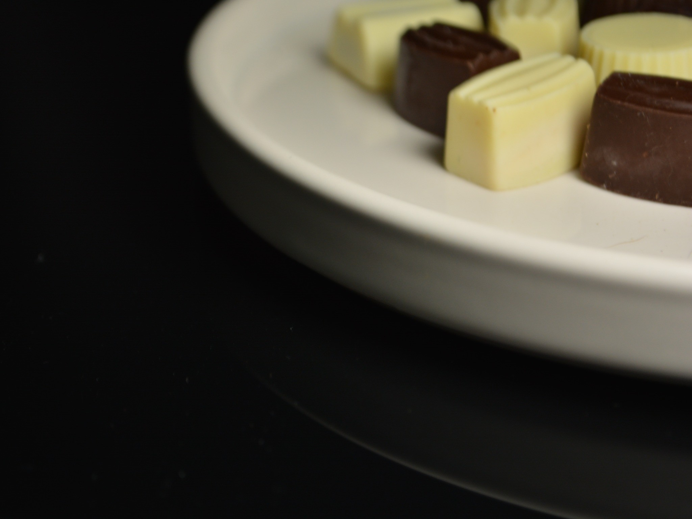

COLECCIÓN FOTOGRÁFICA
Galería
SOBRE EL PROYECTO
Texturas, formas y contrastes
Una exploración visual de bombones artesanales a través de la luz, el detalle y la composición. La serie combina fondos claros y oscuros, encuadres cercanos y una mirada editorial sobre el producto.
CONTACTO
Conversemos
Fotografía gastronómica y de producto.
marcelasistero@gmail.com